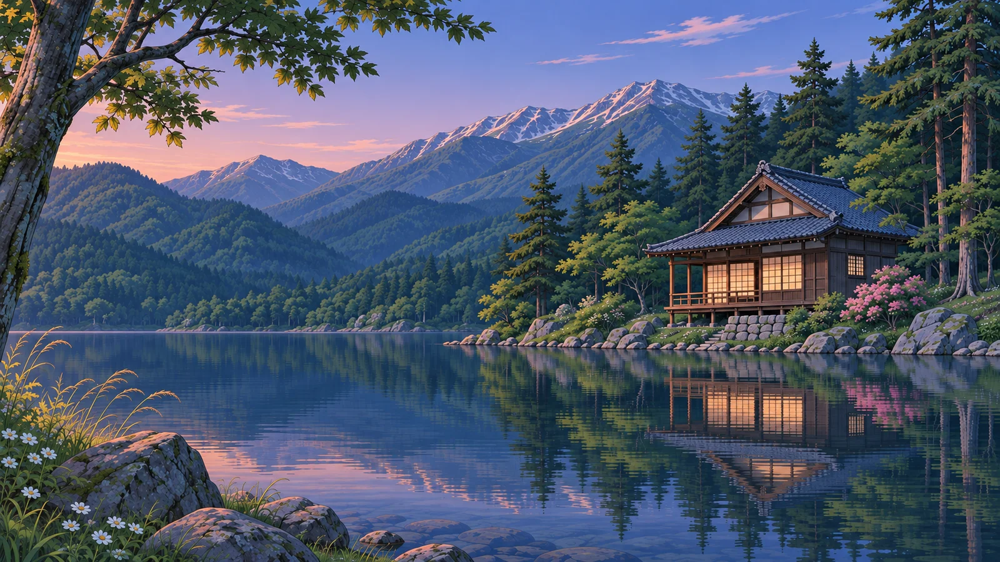
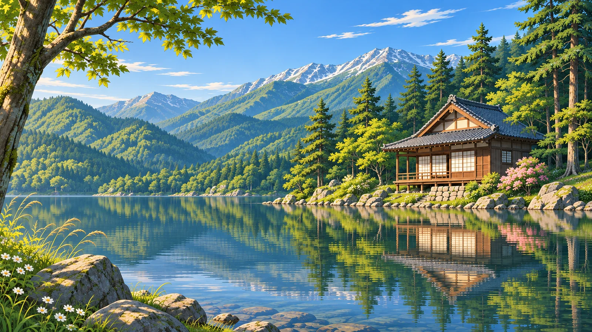
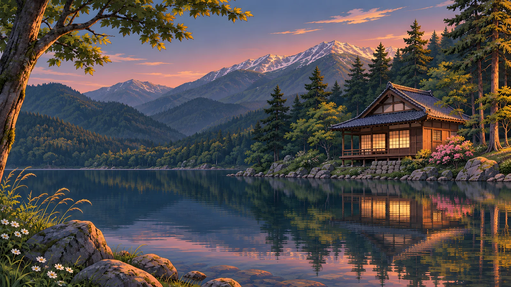
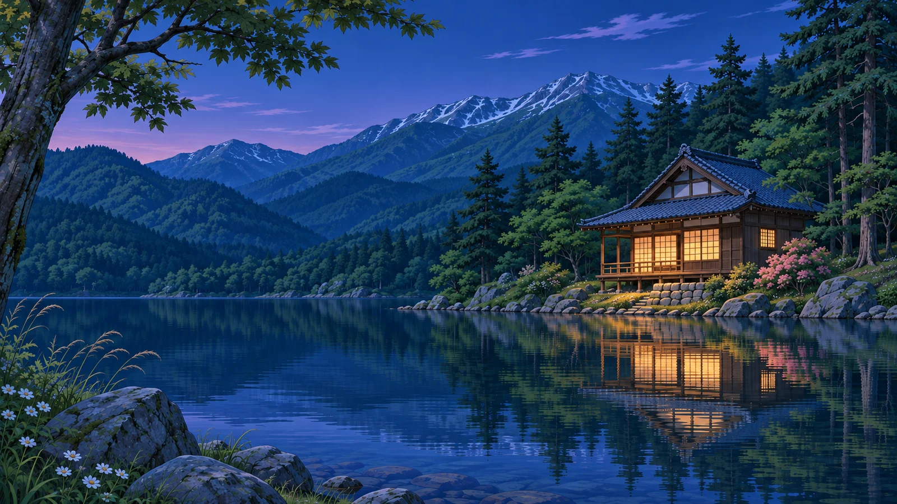
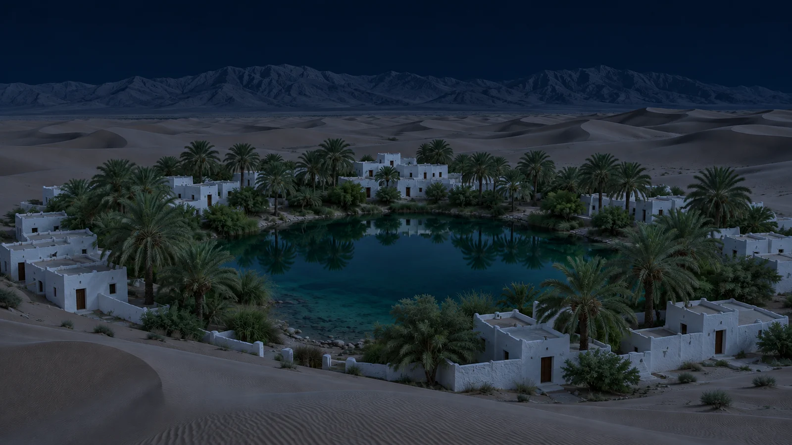
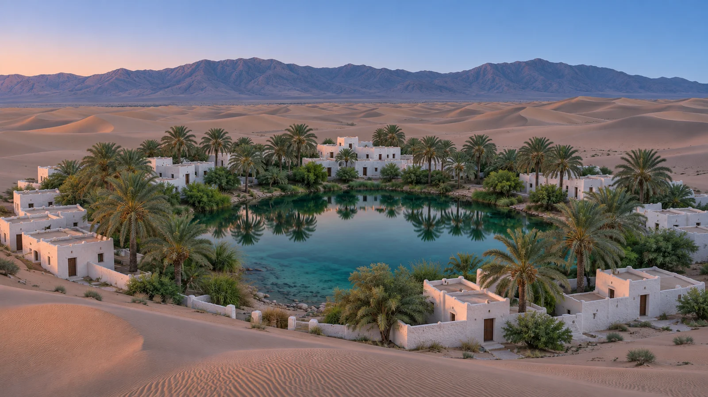
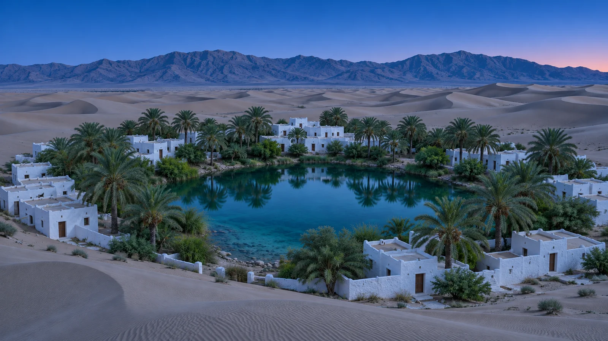

Wallpapers for the passing hours
A change
of light.
The same place. A different feeling.
Little worlds for your desktop,
from the first light to the last.
A place to stay awhileDay & night


A secluded cabin, a still mountain lake, and the slow passage of light. Six illustrated moments, from the hush of midnight to the warmth of sunset.
Download dynamic wallpaper
The collection
Every hour has its own kind of quiet.
Keep the whole day.
Or take a moment with you.
Japanese lakeside cabin
6 moments · 1672 × 941 · AI illustrated


Dawn06:00
PNG

Morning09:00
PNGNoon12:00
PNG

Sunset18:00
PNG

Blue hour20:00
PNGDownload dynamic wallpaper macOS · HEIC · 12.8 MB
Serene desert oasis
6 moments · 1672 × 941 · AI illustrated


Night00:00
PNG

Dawn06:00
PNG
Morning09:00
PNG
Noon12:00
PNG
Sunset18:00
PNG

Blue hour20:00
PNGDownload dynamic wallpaper macOS · HEIC · 10.6 MB

Make yourself at homeA window.
A window.
On your desktop.
AI-created landscapes, imagined once and relit through the day. Made to bring a little of the outside in.
01
Take the whole day
Download the dynamic HEIC for macOS. Open System Settings → Wallpaper and add the file. Choose Dynamic if that option appears, so the scene can follow your local clock.
02
Or stay in a moment
Each image is also available as an original PNG. Download your favorite and set it as a still wallpaper on any desktop.
03
Keep the originals
The source ZIP includes every full-resolution PNG and the time schedule. Downloads use the dimensions shown in the collection, with no upscaling.